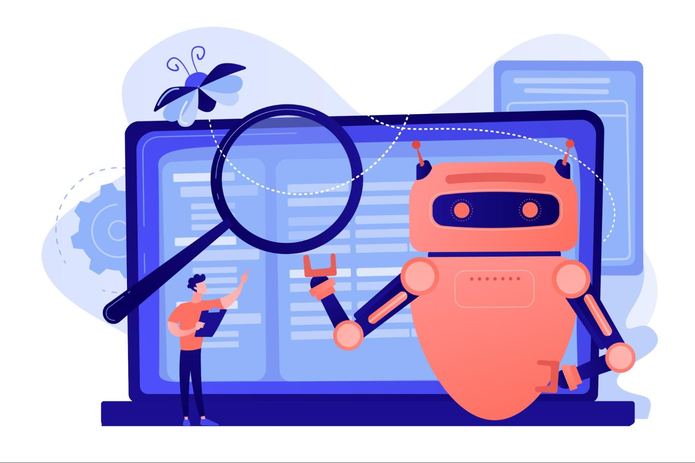

Тренды контент-маркетинга 2025: короткие видео, нано- и микроблогеры для привлечения клиентов
В 2025 году бренды всё чаще делают ставку не на масштабные рекламные кампании, а на точечную и нативную работу с аудиторией. Контент стал короче, динамичнее и «человечнее». Нано- и микроблогеры становятся главной силой продвижения, а короткие видео — самым эффективным форматом для охвата и продаж. Разберём ключевые тренды, которые стоит учитывать ecommerce и малому бизнесу.
Короткие видео: TikTok-запрос везде
Форматы до 60 секунд доминируют во всех платформах: YouTube Shorts, Instagram Reels, VK Клипы. Алгоритмы отдают приоритет именно таким форматам, а пользователи всё чаще покупают после просмотра короткого ролика.
- Конверсии в 2–3 раза выше, чем у классических промо;
- Лучше удержание внимания;
- Простой продакшн: можно снимать прямо на телефон;
- Потенциал вирусности без вложений в рекламу.
Нано- и микроблогеры: влияние важнее охвата
Наноинфлюенсеры (до 10 тыс. подписчиков) и микроблогеры (до 100 тыс.) показывают лучшие результаты в нишевых тематиках:
- Аудитория им доверяет больше, чем звёздам;
- Цена за размещение в разы ниже;
- Высокий уровень вовлечённости;
- Лучше подходят для региональных или нишевых товаров.
Главное — подобрать релевантных блогеров, которые действительно пользуются продуктами и готовы делать нативный контент.
Контент как доверие: сторителлинг и UGC
Люди устают от рекламы. Им важна подлинность: «живые» видео, реальные истории, отзывы. Поэтому компании:
- Показывают закулисье: производство, упаковку, доставку;
- Публикуют видео с участием сотрудников и клиентов;
- Поощряют пользователей снимать обзоры и делиться опытом;
- Делают ставку на эмоциональные смыслы, а не характеристики.
AI-контент и персонализация
Сервисы на базе ИИ (включая GPT и генераторы видео/голоса) позволяют быстро масштабировать контент:
- Генерация сценариев, описаний, вариантов подачи;
- Адаптация под конкретные сегменты ЦА;
- Автоматизация рутинных задач по контенту (например, субтитры, перевод, превью);
- Тестирование гипотез с разными сообщениями.
«Контент в 2025 году — это не креатив ради лайков. Это системный канал продаж, доверия и построения сообщества.» by: Colrose
Кейс: как локальный бренд одежды вырос через Reels
Бренд запускал короткие видео (до 15 секунд) с показом «день из жизни швеи», съёмками процесса пошива и отзывами клиентов. Без платного продвижения видео собирали 30–50 тыс. просмотров. Через 2 месяца продажи выросли на 27%, а возврат клиентов увеличился на 18%.
Что делать бизнесу прямо сейчас
- Начать снимать короткие видео — хотя бы на смартфон;
- Найти 5–10 наноинфлюенсеров в своей нише;
- Упростить согласование и оплату интеграций (через barter, CPA или подарки);
- Собирать и переиспользовать UGC-контент;
- Протестировать генерацию AI-контента и автопубликации.